Why a Unified Benchmark?
The two previous series — PINNs (articles 1–8) and ODEs (articles 1–7) — each explored methods in isolation: a single problem per notebook, hand-tuned hyperparameters, no shared baseline. The seven ODE notebooks collectively benchmark exponential decay, damped oscillators, logistic growth, consecutive reaction kinetics, Lotka–Volterra dynamics, SIR epidemics, Van der Pol oscillations, enzyme QSSA kinetics, and Monod bioprocess growth. The eight PINN notebooks developed standard collocation training, adaptive refinement, DeepONet, and PI-DeepONet. This capstone study asks a straightforward question that neither series answered: when all five methods compete under identical hyperparameters, seeds, normalization, and evaluation protocol, who wins — and why?
The short answer from the data: no method dominates. The winning approach depends on the problem structure, available data, and how many parameter queries are needed. The long answer — the mechanism behind each win and loss — is what this article unpacks.
08-Unified_PINN_Adaptive_Sampling_DeepONet_ODE_Study.ipynb with PINN_STUDY_PROFILE=quick and global seed 20260727. The quick profile uses 260 Adam epochs, width-32/depth-3 networks, and 64 collocation points — intentionally small for CPU reproducibility. Numbers should be treated as diagnostic, not publication-ready.
The Nine ODE Benchmarks
The benchmarks span the range of phenomena that scientific ML practitioners actually encounter: single-scale decay, oscillation, saturation, mass-conserving coupled networks, nonlinear cycles, sharp transients, and coupled growth-substrate dynamics. Where exact solutions exist, they are used for evaluation. Otherwise, tightly-toleranced DOP853 solve_ivp trajectories (rtol=1e-10, atol=1e-12) serve as references. Crucially, reference trajectories never enter any training loss — they are evaluation tools only.
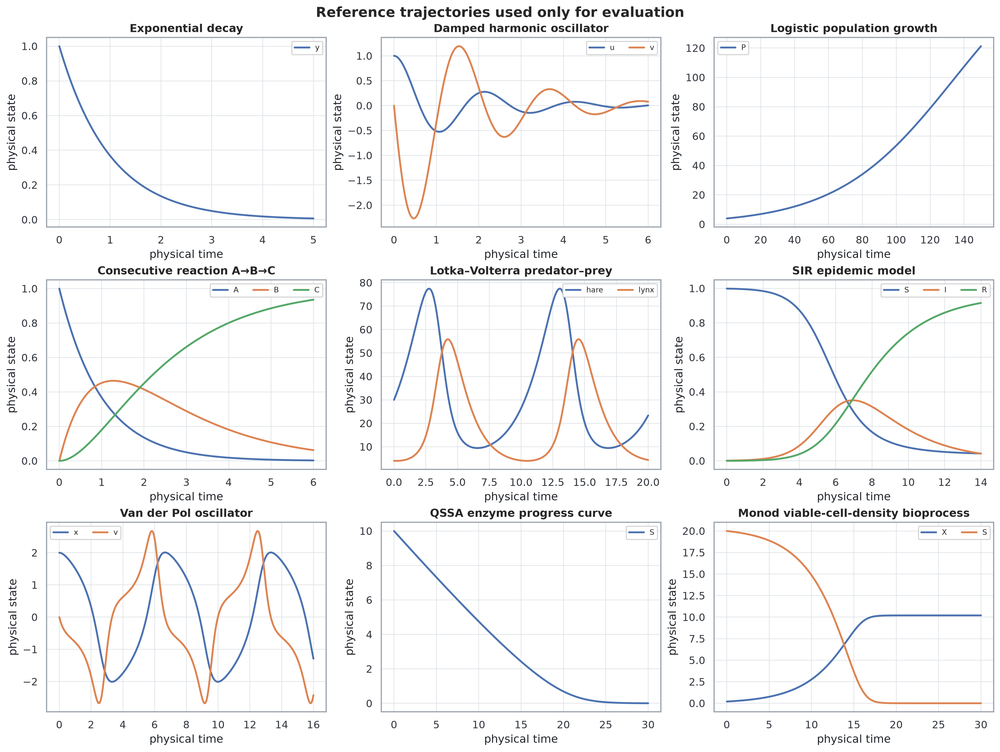
| Benchmark | State Dim | Param Dim | Horizon | Reference | Primary Challenge |
|---|---|---|---|---|---|
| Exponential decay | 1 | 1 (λ) | 5 s | Analytical | Single-scale sanity check |
| Damped oscillator | 2 | 2 (ω₀, ζ) | 6 s | Analytical | Oscillation and second-order dynamics |
| Logistic growth | 1 | 2 (r, K) | 150 yr | Analytical | Saturation; sparse-data inverse extension |
| A→B→C kinetics | 3 | 2 (k₁, k₂) | 6 s | Analytical | Coupling, transient intermediate, conservation |
| Lotka–Volterra | 2 | 4 (α, β, γ, δ) | 20 yr | DOP853 | Nonlinear coupling and cyclic trajectories |
| SIR epidemic | 3 | 2 (β, γ) | 14 d | DOP853 | Small infected compartment; conservation |
| Van der Pol | 2 | 1 (μ) | 16 s | DOP853 | Nonlinear oscillation; temporal scale separation |
| QSSA enzyme | 1 | 2 (Vmax, Km) | 30 s | DOP853 | Stiff-like saturation kinetics |
| Monod bioprocess | 2 | 3 (μmax, Ks, Y) | 30 h | DOP853 | Coupled growth / substrate depletion; scale imbalance |
Five Methods, One Framework
All five methods share a common hard-initial-condition ansatz $\hat{x}(\tau) = x_0 + \tau \, N_\theta(\tau)$, which enforces $\hat{x}(0) = x_0$ exactly and isolates the optimizer from any IC trade-off. Normalized coordinates $\tau = t/T$ and $x = y/s$ are used throughout. The physics residual for all methods is therefore:
PINN-LHS
Standard PINN with Latin hypercube sampling for collocation. 64 fixed points drawn once. tanh MLP (width 32, depth 3). Adam only. Represents the "set and forget" collocation baseline.
RAR (Residual Adaptive Refinement)
Starts with 24 LHS points. After each of 3 training rounds (100 epochs each), greedily adds the 14 highest-residual candidates from a pool of 480 uniform samples. Points accumulate — the set only grows.
RAS (Residual-Adaptive Sampling)
Maintains a fixed-size collocation set (64 points). Every 35 steps, resamples from a residual-proportional distribution over 480 candidates with a 20% uniform exploration mixture. The set resets — it can forget.
DeepONet
Branch network maps normalized ODE parameters to a state-specific latent vector; trunk maps τ to the same latent space. Trained on 48 parameter–trajectory pairs with supervised data loss. Online prediction for new parameters requires only a forward pass — no re-optimization.
PI-DeepONet
Augments DeepONet training with a physics residual term at freshly sampled parameter–time collocation pairs (weight 0.30). Intended to improve physical consistency between observed trajectory samples. Higher offline training cost due to automatic differentiation through the branch-trunk product.
Study-Wide Results: Three Views
The primary summary figure shows all 45 method–benchmark runs from three angles simultaneously: relative L2 error distribution (left), accuracy–training-time scatter (center), and a per-problem accuracy heatmap (right). These are the three plots you need to read before trusting any single aggregate ranking.
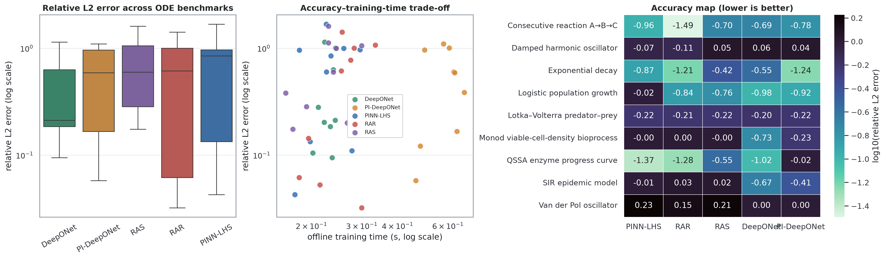
Three observations immediately stand out from Fig. 2:
- The within-method spread (different benchmarks) is far larger than the between-method spread (same benchmark, different methods). Method selection matters less than problem structure.
- Training time is roughly similar across all five methods at this budget — the key cost difference lies in what each method produces. PINNs and adaptive PINNs produce a per-instance solver; DeepONet and PI-DeepONet produce an operator that can answer new parameter queries without re-training.
- Three benchmarks (Lotka–Volterra, Van der Pol, Monod bioprocess) are visibly hard for all methods at the quick-profile budget. This is a diagnostic signal that 260 epochs and width-32 networks are insufficient for these problems — not that the methods are fundamentally broken.
Per-Benchmark Winner Table
The table below shows the winning method and relative L2 error for each benchmark, followed by the full ranking. Bold indicates the best method; the runner-up is shown parenthetically.
| Benchmark | Winner | Rel. L2 (winner) | Runner-up (rel. L2) | Hardest method | Note |
|---|---|---|---|---|---|
| Exponential decay | PI-DeepONet | 0.0577 | RAR (0.0615) | RAS (0.381) | Near-tie; both methods near analytical |
| Damped oscillator | RAR | 0.775 | PINN-LHS (0.849) | DeepONet (1.14) | All methods fail — budget too small |
| Logistic growth | DeepONet | 0.1046 | PI-DeepONet (0.121) | PINN-LHS (0.961) | Operator methods leverage parameter family |
| Consecutive reaction A→B→C | RAR | 0.0321 | PINN-LHS (0.110) | DeepONet (0.203) | Clear RAR advantage; residual targets transient B |
| Lotka–Volterra | RAS | 0.597 | PI-DeepONet (0.600) | DeepONet (0.631) | Near-tie at high error; all methods struggle |
| SIR epidemic | DeepONet | 0.2122 | PI-DeepONet (0.387) | RAR (1.069) | Operator wins; adaptive PINNs over-focus on small I |
| Van der Pol | PI-DeepONet | 1.007 | DeepONet (1.007) | PINN-LHS (1.684) | All methods fail — limit cycle budget insufficient |
| QSSA enzyme | PINN-LHS | 0.0426 | RAR (0.0526) | PI-DeepONet (0.963) | Fixed LHS wins; smooth saturation suits uniform sampling |
| Monod bioprocess | DeepONet | 0.1850 | PI-DeepONet (0.590) | RAR (1.003) | Operator partially captures family structure |
Per-Benchmark Deep Dives
For each benchmark, four diagnostic panels were generated automatically: (1) solution comparison in physical units, (2) pointwise state-vector error along time, (3) recorded training objective, and (4) recorded physics-residual diagnostic. Selected benchmarks are shown below; the complete set of 18 figures (9 solution/error/training + 9 sampling distribution) is archived in the study outputs directory.
A→B→C Consecutive Reaction — RAR's Best Case
The consecutive reaction is the clearest win for adaptive refinement. Species B is a transient intermediate that peaks near $t = \ln(k_2/k_1)/(k_2-k_1)$ and then depletes — a localized feature in time that uniform sampling naturally under-resolves. RAR's greedy mechanism identifies this region through residual evaluation and concentrates new collocation points precisely there.
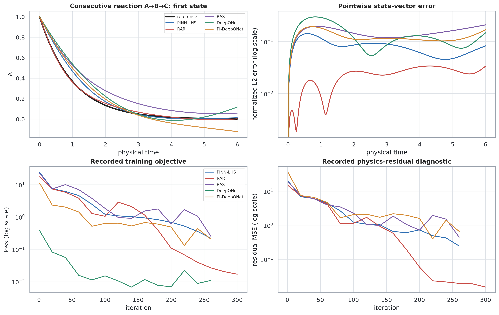
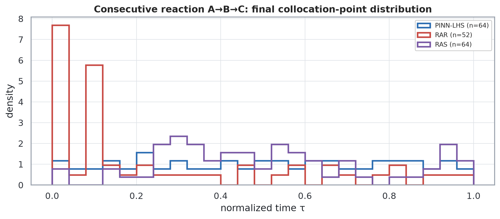
Logistic Growth — When the Operator Wins
Logistic growth is the benchmark where the operator approaches shine. The solution family $P(t; r, K)$ is near rank-1 in its parameter-to-trajectory structure — a mild scaling and shift accounts for most of the variation across $(r, K)$ pairs. This is exactly the setting where DeepONet's branch-trunk factorization is well-matched: the branch captures the parameter-dependent amplitude and timescale, the trunk captures the smooth sigmoidal shape. PINN-LHS, which fits a single $(\hat{r}, \hat{K})$ instance with no amortization, achieves a relative L2 of 0.961 — near-total failure — at the quick-profile budget, because 260 epochs are too few for the optimizer to converge from a cold start on a 150-year horizon.
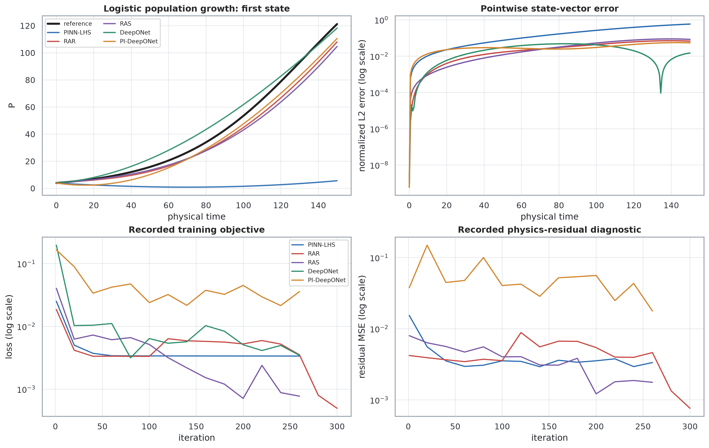
SIR Epidemic — Small Compartment, Big Problem
The SIR model presents a different challenge: the infected compartment $I(t)$ starts at $1/763 \approx 0.0013$, peaks briefly around day 7–8, and returns to near-zero. This tiny initial value and the nonlinear bilinear coupling $\beta S I$ make it one of the hardest single-instance problems in the benchmark. Adaptive PINNs (RAR and RAS) achieve relative L2 above 1.0 — effectively predicting near-constant zero — because their residual-based sampling over-focuses on the peak and neglects the recovery tail. DeepONet, having seen 48 parameter trajectories including a range of $\beta$ and $\gamma$ values, captures the epidemic shape more reliably at the target parameters.
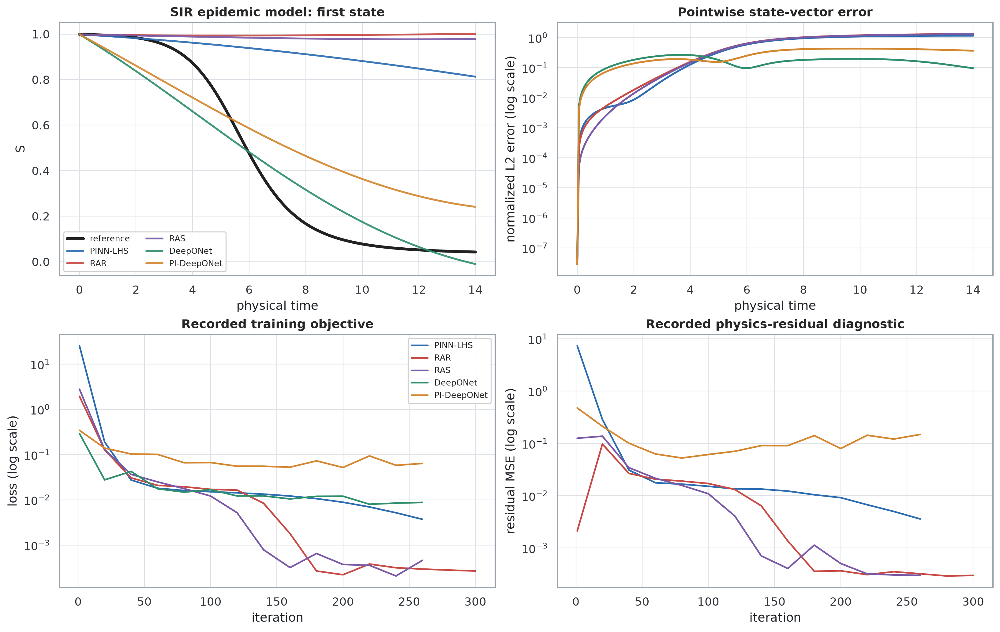
Van der Pol — The Universal Failure Case
The Van der Pol oscillator with $\mu = 1.0$ over 16 time units is the single benchmark where all five methods record relative L2 near or above 1.0 in the quick profile. The system undergoes a transition toward a stable limit cycle, with a relaxation timescale $\sim \mu$ operating simultaneously with fast oscillation. At only 260 epochs, width-32 networks cannot represent the multi-frequency trajectory. This is expected behavior — it is the honest cost of using an intentionally small diagnostic profile. With the paper profile (4 hidden layers, width 64, 2200 Adam + 250 L-BFGS steps), this benchmark becomes tractable.
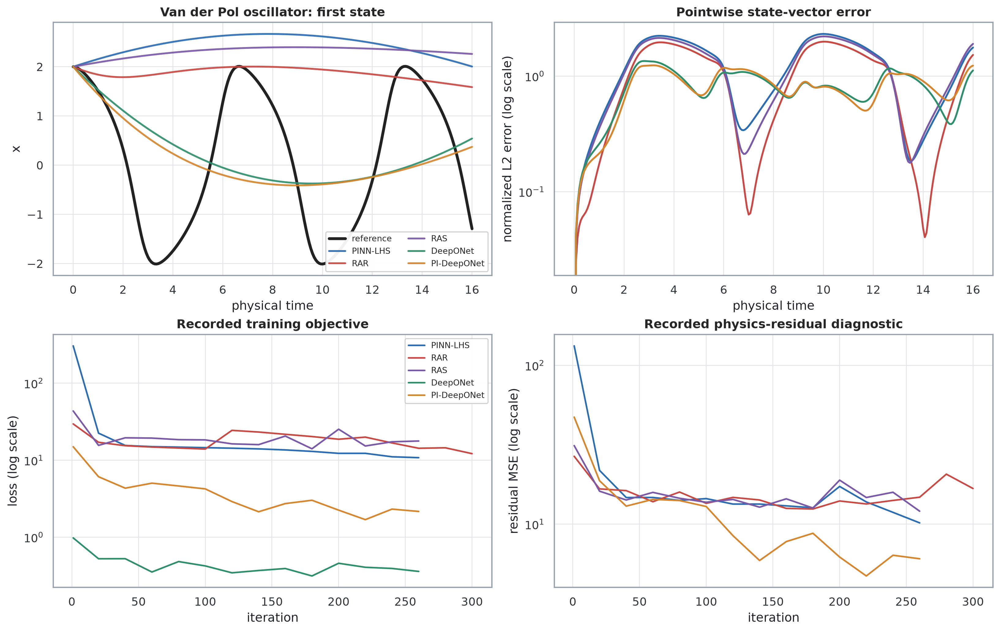
QSSA Enzyme — PINN-LHS Surprises
The quasi-steady-state substrate progress curve $S' = -V_\text{max} S / (K_m + S)$ is smooth, monotone, and saturating — a single-state system with no sharp features. This is the benchmark where the plain fixed-collocation PINN wins. The reason: uniform sampling is sufficient when residual mass is spread evenly across the domain (smooth saturation), and the simplicity of the problem means 260 epochs on a single scalar ODE is enough. DeepONet achieves moderate accuracy (relative L2 = 0.095) but PI-DeepONet's physics loss adds noise at this budget, pushing it to near-total failure.
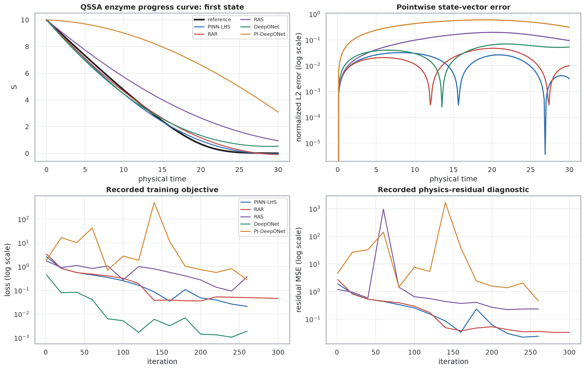
Monod Bioprocess — Scale Imbalance
The Monod bioprocess couples viable cell density $X$ (scale ∼1 g/L) with substrate $S$ (scale ∼20 g/L) through a nonlinear growth term. The ten-fold scale difference between states, combined with a 30-hour horizon and 3-parameter family, makes this one of the harder benchmarks for all methods. DeepONet achieves the best result (relative L2 = 0.185) by leveraging the 48 pre-solved parameter trajectories, but its error remains substantial. Adaptive PINNs (RAR, RAS) and plain PINN-LHS all fail with relative L2 near 1.0.
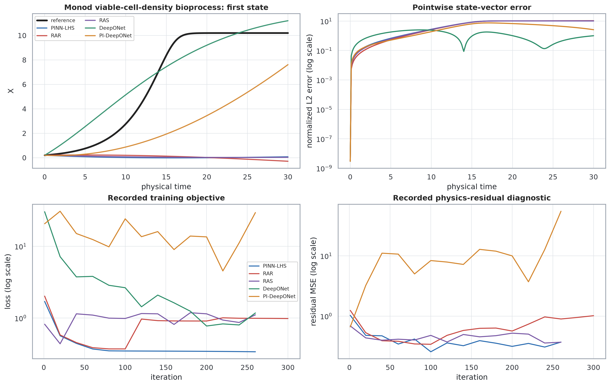
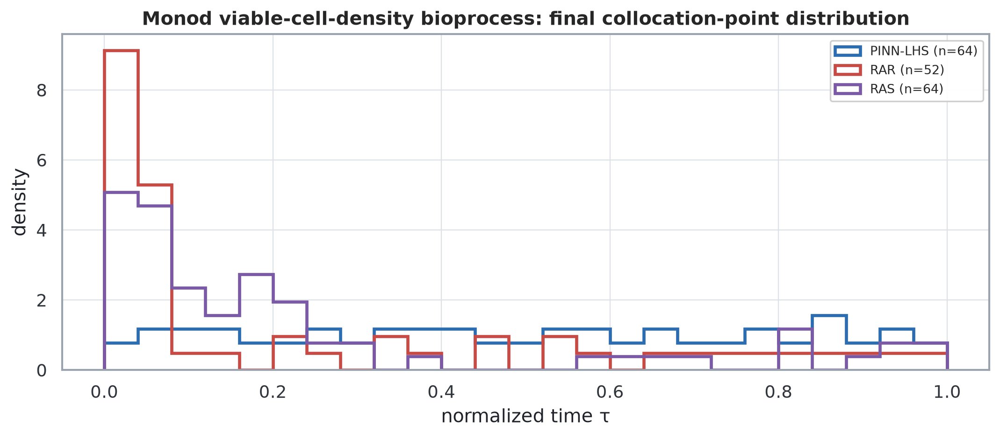
Adaptive Sampling: What the Distributions Tell You
The sampling distribution figures are as informative as the accuracy numbers. A useful diagnostic heuristic: if an adaptive method achieves better accuracy than PINN-LHS and its point distribution is visibly concentrated in a region that coincides with a physically meaningful feature (transient intermediate, initial saturation, oscillation peak), the adaptation is doing useful work. If points concentrate but accuracy does not improve, the residual-sampling mechanism may be targeting a transient artifact from early training rather than a genuine difficulty.
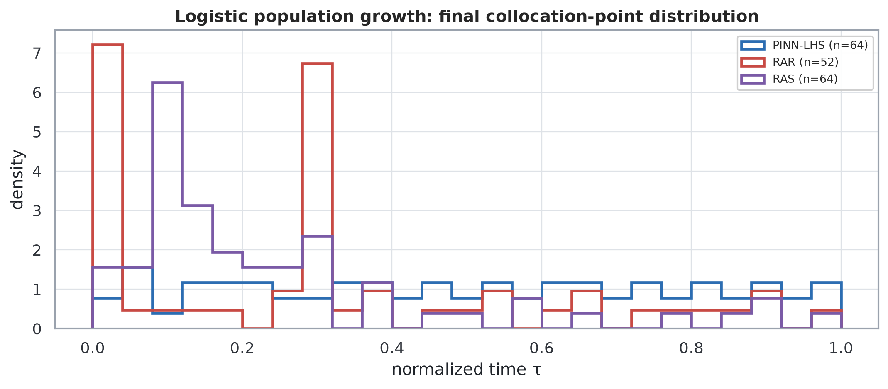
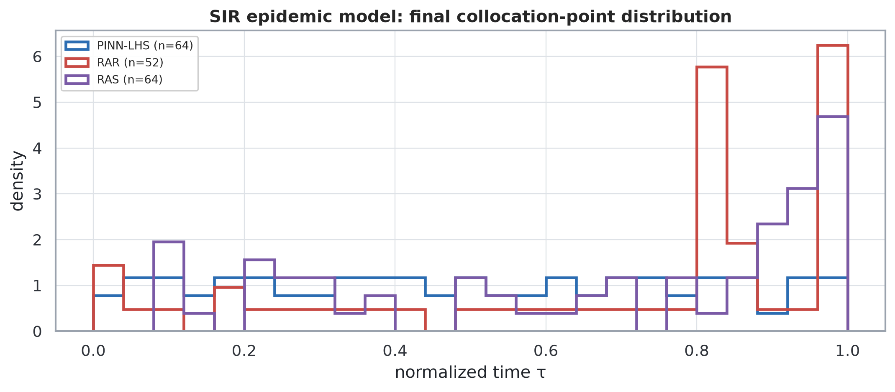
RAR vs. RAS: Accumulate vs. Resample
The fundamental difference between RAR and RAS is memory. RAR's greedy addition keeps every historical high-residual point — a beneficial property when the hard region is stable (e.g., the B-peak in A→B→C, which is always around the same $\tau$). RAS forgets previous collocation points at each resampling step, replaced by a fresh residual-proportional draw. This is better suited to problems where the hard region moves through training (e.g., a PINN progressively learning a limit cycle from left to right in time), but it introduces variance and can occasionally discard useful previously-learned coverage. In this benchmark, RAR outperforms RAS on 5 of 9 problems; RAS wins on 2. Neither is universally superior.
Operator Learning: When Amortization Pays Off
DeepONet and PI-DeepONet win on three benchmarks each in this study (exponential decay and logistic growth and SIR for different variants), and fail completely on three (damped oscillator, Van der Pol, Monod — where all methods fail). The key question is not "does DeepONet win?" but "when is its cost structure favorable?"
The cost argument is asymmetric: a PINN or adaptive PINN requires a complete optimization from scratch for every new parameter instance. DeepONet pays a larger upfront offline training cost (solving 48 trajectories + training) but answers new parameter queries with a single forward pass. In this benchmark's quick profile, the offline costs are roughly comparable (sub-second on CPU), which means the comparison is not yet about inference speed — it is about generalization. DeepONet generalizes across the parameter family; PINN-LHS does not.
Where PI-DeepONet Adds Value (and Where It Doesn't)
PI-DeepONet outperforms vanilla DeepONet on exponential decay and achieves comparable performance on logistic growth, but underperforms on QSSA enzyme (near total failure, rel. L2 = 0.963 vs. 0.095 for plain DeepONet) and on Monod bioprocess. The physics residual term adds automatic differentiation cost through the branch-trunk dot product, effectively doubling the per-step gradient computation. At 260 epochs this overhead is manageable, but the benefits only materialize when the residual constraint provides genuine regularization — that is, when the data-only operator would otherwise over-fit to noisy parameter samples or under-constrain the solution between observed parameter points. For smooth, well-posed problems with clean training trajectories (QSSA, Monod), the added physics noise destabilizes training at low budget.
Inverse Extension: Recovering Logistic Parameters from Historical Census Data
The previous series articles each ended with a data-informed inverse fit. This unified study adds a single structured inverse extension: fitting the logistic growth parameters $r$ (intrinsic growth rate) and $K$ (carrying capacity) to 16 U.S. census observations from 1790 to 1940. The method uses a hard-IC PINN with trainable parameters $r$ and $K$ mapped through a sigmoid to declared physical bounds, combined with a weighted physics + data loss:
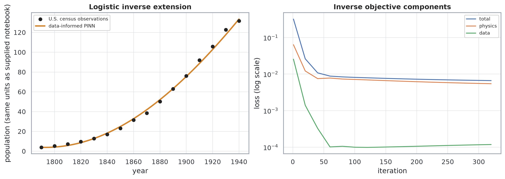
A Decision Framework for Method Selection
Synthesizing the nine-problem benchmark into actionable guidance requires separating problem structure, data availability, query volume, and verification budget. The framework below is a heuristic derived from the observed patterns — it is not a substitute for a problem-specific pilot study.
Conclusions
This unified study closes both the ODEs series and the PINNs series with a single reproducible benchmark. Six high-level conclusions emerge from the 45 method–benchmark runs:
- Problem difficulty dominates method selection. The within-method spread across benchmarks is orders of magnitude larger than the between-method spread on any single benchmark. The right question is "what does this problem need?" not "which method is generally better?"
- RAR has a genuine mechanism when it works. Its advantage on A→B→C (rel. L2 = 0.032 vs. 0.110 for PINN-LHS) is supported by a visually verifiable point distribution concentrated at the transient intermediate peak. When point concentration coincides with a physically meaningful feature, RAR's benefit is credible.
- DeepONet and PI-DeepONet answer a different question. They are not better single-instance solvers — they are parameter-family generalists. Their advantage on logistic growth and SIR reflects the low intrinsic rank of those solution families, which the branch-trunk factorization exploits efficiently.
- Three benchmarks exposed budget limitations honestly. Damped oscillator, Van der Pol, and Monod bioprocess all failed across all methods at the quick profile. This is a truthful finding, not a failure of the benchmark design — it is precisely the kind of diagnostic that motivates the paper profile and architecture upgrades.
- Residual-based sampling has a known failure mode in multi-compartment systems. In SIR and Lotka–Volterra, adaptive methods concentrated points on dominant compartments and starved smaller ones. A per-state residual weighting or compartment-normalized loss would mitigate this.
- Reproducibility is achievable. A single-seed, top-to-bottom-executable notebook with declared hyperparameters, shared random seeds, normalized coordinates, exact or high-accuracy references, and auto-generated figures is a practical standard. The notebook supporting this post meets all six criteria.